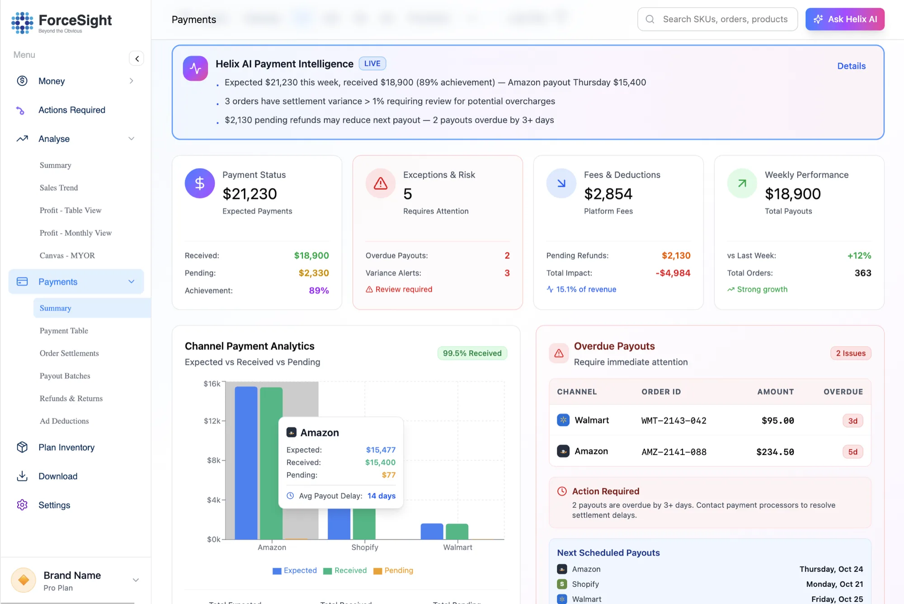
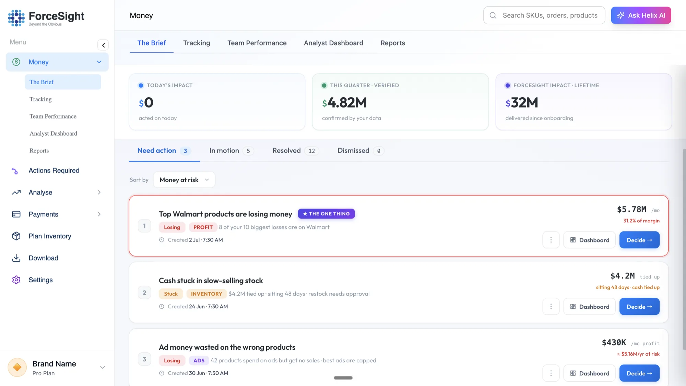
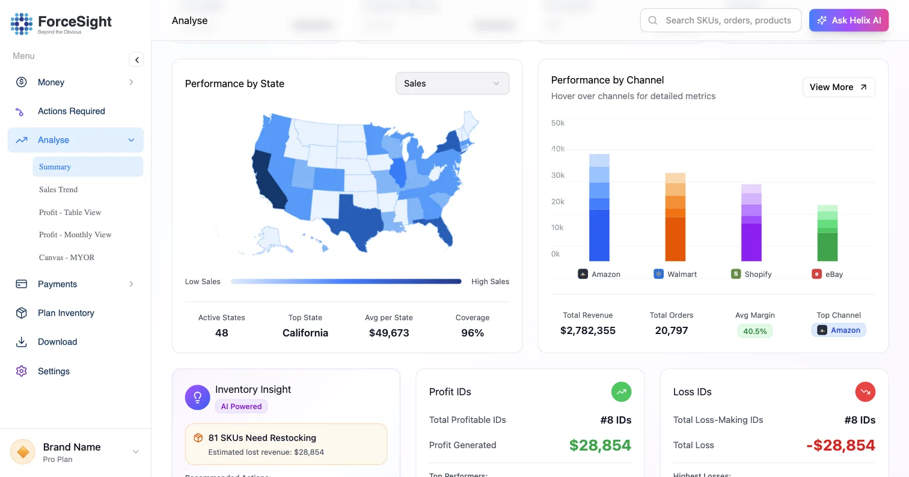

We do. ForceSight puts finance operators inside your team and deploys AI agents into your channel P&L, settlements, deductions and inventory cash — on the stack you already own, live in 30–45 days. The judgment stays with you. The rebuild, the matching and the chasing don't.
Most AI shops don't know what a chargeback is. Most finance consultants can't ship. Most CPG software wants you to change how you work. ForceSight is the team behind a platform that has been doing this for consumer brands, in production, for three years.
Ex-FP&A and M&A leadership from a $25B industrial. We've closed books, defended accruals and argued with auditors — and we sit on your side of the table.
A deterministic engine that owns every dollar, an LLM layer that explains and drafts, agents that execute inside your controls. Live across 250+ brands, not a demo.
Gross-to-net, trade spend, post-audit deductions, OTIF fines, co-op and MDF, 1P vs 3P economics, retail media ROAS, weeks of cover, multi-entity close. We've reconciled ~$1B of it and found $170M we shouldn't have.
Diagnose where dollars leak between sell-in and settlement, and where days leak between close and decision — across the whole CFO office, not one report.
On your ERP, portals and data lake. Your rules, your controls, your chart of accounts.
Parallel-run, tie out, hand over. Your team operates it; we stay on call.
Baseline in Consult, reported against after handover. Recovery-share pricing where the outcome is cash.
Finance automation makes the report faster. A checkpoint makes the number trustworthy. The agent runs a control set across close, P&L, cash and planning against reconciled actuals, flags what's off, assigns an owner, and doesn't let it close until it ties out. Track, trace, accountable.
Every check, every day, against the same reconciled ledger.
Every flag links to the invoice, claim, contract or campaign it came from.
Every flag has an owner, a due date and a verified dollar impact when closed.
Illustrative board. Built from your ERP, retailer portals and ad platforms in Discovery — every line traces to a reconciled ledger entry.
Profit Agent, Deductions Agent and Inventory Planning Agent run in production today across 250+ brands. They take the rebuild, the matching and the chasing; your controller keeps the judgment and the sign-off. In a deployment we don't hand you a login — we scope the agent to your accounts, your controls and your approval chain, wire it into your ERP, portals and BI, and build what's missing.
Chargebacks, shortages and compliance fines arrive the month after your first big-box PO, and nobody on a DTC team has seen one before. Every deduction coded and matched to the proof — BOL, POD, contract, pricing file. Invalid claims get a dispute drafted and filed in the retailer portal; valid ones get posted to the right GL. Nothing gets written off by default.

Sell-in to contribution margin by retailer, channel and SKU, with trade, deductions, fees, returns and retail media allocated on your rules — not rebuilt in a workbook at month-end.
Retailer POS meets your shipment plan. The engine generates the forecast under your case-pack, pallet and lead-time constraints; the agent flags where cash is trapped and where you'll be fined for being out.
Walmart Connect, Amazon Ads and co-op billed against what was approved — and against sell-through. Spend on products with no velocity gets capped; retail media invoices get reconciled like any other deduction.
Accrual gaps, margin drops, restock needs, return spikes, cost increases — routed to the right person in Slack or Teams, tracked to close, verified against the ledger when done. Leadership sees a number, not a status update.
Every deployment starts from what your finance team already checks by hand, then encodes it — with your thresholds, your approvers, your GL. If it isn't on this page, that's usually where we end up building.
Nothing gets replaced. The spreadsheets, portal exports and Slack threads that were the process get replaced by a system that runs it — and an agent that checks it.

Illustrative — a $120M omnichannel brand's close. Your baseline is measured in Discovery and reported against after handover.
One agent, fixed scope, fixed price. Enterprise engagements phase by entity. Value is measured in hours your team stops spending and dollars that stop leaking — baselined before we start.
Sit with your CFO, controller, FP&A and data teams. Map the workflow, the systems, the manual hours, the exceptions and the rules nobody wrote down.
Output: scoped build + baseline hours and dollarsConnect ERP, retailer portals, POS and ad platforms. Encode your rules into the engine. Wire the agent's checks and approval chain.
Output: first live run on your dataParallel-run against your current close for a full cycle. Reconcile every variance until the outputs tie — then beat them.
Output: hours and dollars, signed off by financeDocumented, trained, yours. We report against the baseline quarterly; a light retainer covers connectors, monitoring and new checks as your accounts change.
Output: a checkpoint your team runs, a number we stand behind| Customer P&L rebuild 2 analysts, monthly | 96 hrs 6 hrs |
| Retailer remittance reconciliation Walmart, Target, Kroger, Amazon | 60 hrs 4 hrs |
| Management deck & variance commentary | 40 hrs 3 hrs |
| Deductions disputed and recovered previously written off | +$38K / mo |
| Annual impact | ≈ $610K |
Hours at a loaded $85/hr. Recovery is a typical mid-market run-rate, not a guarantee — we baseline yours in Consult and report against it.
Shopify, Amazon 3P, and Target or Walmart just said yes. A finance lead who's also ops. Channel P&L lives in a workbook only one person understands, and the first deduction statement just landed.
SAP or Oracle, a data lake, Power BI, E2open — and a 12-person finance team still hand-building customer P&L, rebate accruals and the monthly deck from portal exports.
SAP or Oracle, E2open POS, a consolidation layer, Power BI — and customer P&L, rebate accruals and the 80-slide deck still hand-built. You need AI querying on a governed foundation, sequenced: data → reporting → agents.
State-level sell-through, DC-level deductions, retailer-specific compliance. The platform already reads 48 states of POS — your deployment adds your accounts, your DCs, your rebate geographies.

That division of labor is how 250+ brands run their books on ForceSight — and it's what we deploy into yours.
Reconciliation, allocations, accruals and P&L math run in auditable code. Same input, same output, every time. Your auditors can read it.
Run the control set, narrate variances, draft disputes and commentary, assign owners — always citing the ledger line it came from. Never a made-up number.
A 30-minute call with a founder — a finance operator, not an SDR. You'll leave knowing whether it's a fit, what it costs, and what day you'd see the first dollars back.
Fixed scope · fixed price · 30–60 days · outcome reported against baseline
A founder will reply within one business day with a proposed time.